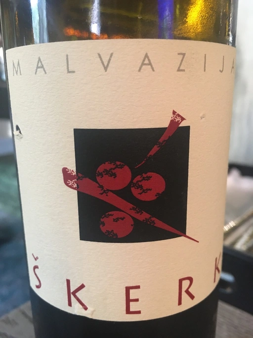

- Type
- White Still, Dry
- Producer
- Škerk
- Vintage
- 2016
- Location
- Italy, IGP Venezia Giulia
- Grapes
- Malvasia di Candia Aromatica
- Alcohol
- 14
- Sugar
- 0.1
- Price
- 999 UAH
- Cellar
- N/A
Ratings
2020-07-25 - 8.00
Very pleasant and meditative orange. Peach, tea, apricot jam and tulips. Medium acidity, low tannins and very long aftertaste with flavors of pine nuts and sour apples. Balanced and tasty.